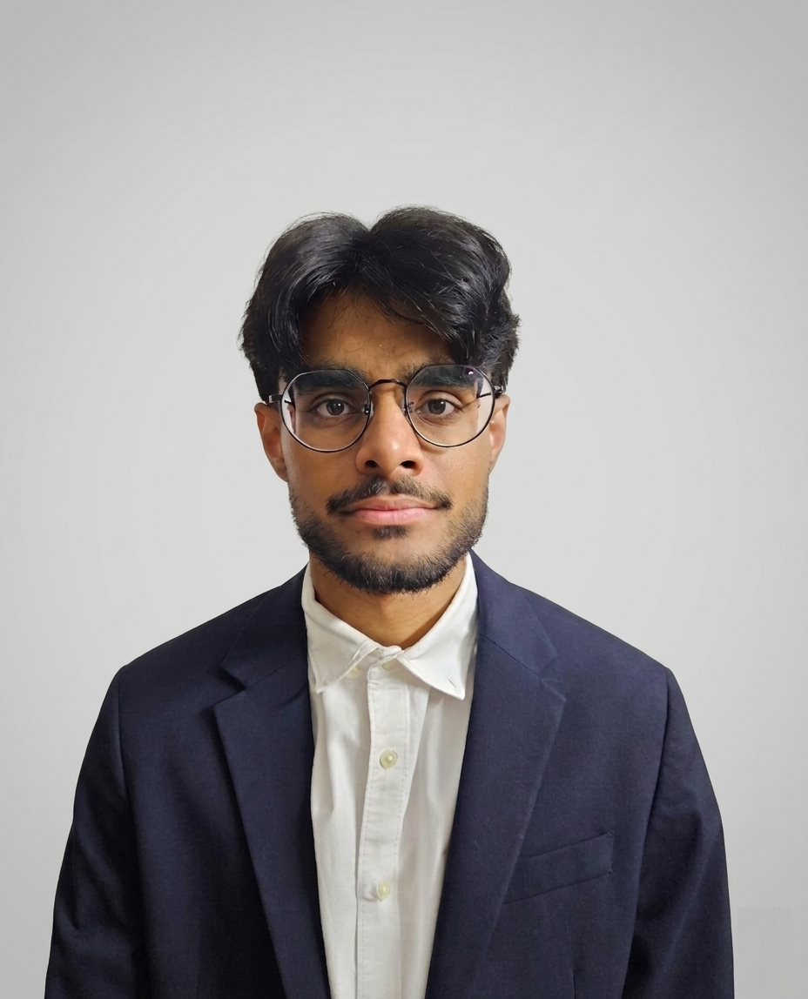

Mechanical Engineer — ENSAM
Engineering student at Arts et Métiers, one of France's leading schools. Passionate about mechanical systems.

I'm Omar Abdul, an engineering student at Arts et Métiers (ENSAM), one of France's top engineering schools. I joined after completing two years of intensive CPGE — a rigorous preparatory program covering engineering sciences, advanced mathematics, physics, and computer science.
My approach to engineering is grounded in rigor, consistency, and curiosity for how things work. I thrive at the intersection of physical intuition and computational modeling, turning complex problems into measurable, validated outcomes.
Beyond engineering, I'm committed to sharing knowledge: I have been tutoring students in mathematics and physics since 2022, adapting my explanations to each learner's pace and background. Teaching has sharpened my ability to communicate complex ideas clearly.
Engineering degree in mechanical engineering, materials science, design, and project management. One of France's most selective schools, recognized internationally for excellence in applied engineering sciences.
Highly competitive two-year preparatory program for France's top engineering schools. Intensive coursework in engineering sciences, advanced mathematics, physics, and computer science — widely regarded as among the most demanding undergraduate-level programs in the world.
Designed and manufactured a mechanical part using the full fabrication pipeline taught at Arts et Métiers — from metrology and material characterization to additive manufacturing and conventional machining.
Personalized one-on-one academic coaching for secondary and preparatory level students, adapting my pedagogy to each learner. Consistent track record of measurable grade improvement. Over two years of continued engagement — a testament to the trust students and families place in me.
Supported on-site teams in preparation and logistics. Managed material handling, contributed to operational coordination, and developed a practical understanding of construction sequencing and site safety. First-hand exposure to engineering at the application layer.
Took orders and served customers in a fast-paced environment. Coordinated with kitchen staff and managed multiple tables simultaneously.
Welcomed and advised customers, managed sales and cash register operations, handled product stocking and visual merchandising. An early professional experience that built client-facing communication skills.
My engineering formation has led me toward three interconnected areas where I intend to contribute at the graduate level — combining physical modeling, computational tools, and hands-on experimental validation.
Heat transfer optimization, thermal management of electronics and energy systems, computational fluid dynamics. My thermal LED project sparked a deep interest in bridging simulation and physical validation.
Finite element methods, structural analysis, and simulation-driven design. I am particularly drawn to how numerical methods can compress the physical prototyping loop in complex mechanical systems.
Statistical modeling, experimental measurement, and Python-based data pipelines applied to physical systems. My probability and tensile testing projects both demonstrated the power of rigorous quantitative analysis in generating insight from real experimental data.
France's CPGE are among the most intensive undergraduate programs in the world — two years of full-time advanced mathematics, physics, and engineering sciences at a pace that has no equivalent in most systems. This is not just a credential; it is a way of thinking: systematic, precise, and built for hard problems.
I model in SolidWorks, simulate in Python — but I also machine parts, run tensile tests, and read precision instruments. I understand engineering at both the equation and the lathe level. That duality makes me effective in research environments that bridge simulation and physical experiment, which is where the most interesting problems live.
Two years of teaching mathematics and physics to individual students has sharpened my ability to explain difficult concepts clearly, adapt to my audience, and build knowledge incrementally.
I have worked construction sites and restaurant floors alongside rigorous academic training. I know how to show up, commit, and contribute in environments that demand both intellectual precision and practical adaptability. My work ethic was built by real-world stakes and that makes a difference in research settings that are sometimes unpredictable and always demanding.